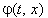

|
3.2. Пример на построение тестовой задачи.
Рассмотрим одномерное дифференциальное уравнение параболического типа,
для решения которого требуется подобрать устойчивую разностную схему:
Зададим тестовую функцию в виде:
Определим выражения для производных от тестовой функции (15.14), которые входят в исходное уравнение (15.13):
Представим дифференциальное уравнение, истинным решением которого должна быть тестовая функция (15.14), в следующем виде:
Подставляя выражения (15.15) в данное уравнение, определим вид неизвестной функции , входящей в состав свободного члена:
Таким образом, мы построили дифференциальное уравнение, которое отличается
от исходного уравнения (15.13) только видом свободного члена и для которого, в то же время, тестовая
функция (15.14) является истинным решением:
Однако для того чтобы его решить с использованием численных методов, требуется задать начальное и граничное условия. Зададим эти условия с помощью истинного решения уравнения (15.16), то есть с помощью
тестовой функции (15.14):
Теперь мы можем записать для уравнения (15.16) какую-либо разностную схему, решить уравнение (15.16)
с её помощью, сравнить полученные численные значения со значениями тестовой функции (15.14) в тех же
точках разностной сетки и на основании выражения (15.12) сделать вывод об устойчивости использовавшейся
разностной схемы. Поскольку уравнения (15.13) и (15.16) отличаются только видом свободного члена,
в состав которого в обоих случаях не входит искомая функция, то одинаковые разностные схемы для этих
уравнений будут обладать одинаковым типом устойчивости.
|